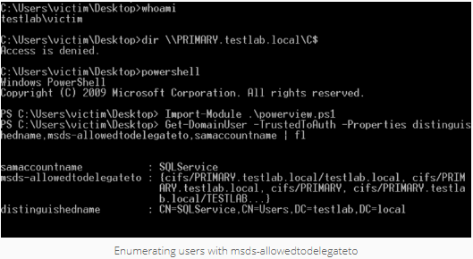

Scenario 1 : User Account Configured For Constrained Delegation + A Known Plaintext
This is the scenario that Benjamin showed in his tweet. If you are able to compromise the plaintext password for a user account that has constrained delegation enabled, you can use Kekeo to request a TGT, execute the S4U TGS request, and then ultimately access the target service.



Again, if you would like to execute this attack from a Linux system, read Ben’s post.